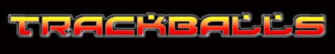
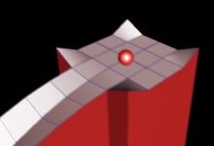
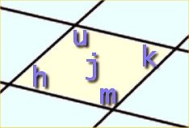

1.0 - What is Trackballs?
|
Trackballs is a simple game similar to the classical
game Marble Madness on the Amiga in the 80's. By steering a marble
ball through a labyrinth filled with vicious hammers, pools of acid
and other obstacles, the player collects points. When the ball reaches
the destination it continues to the next, more difficult track -
unless the time runs out.
It should be noted that this game is not intended to be
a replica of marble madness but rather inspired by it. For instance
the game uses advanced 3D graphics even though the original game had
no real use for it. Also we aim at making the game highly configurable
by a scripting extension (Guile) and provide a simple editor by which
new levels easily can be created.
|
 |
2.0 - Playing Trackballs
To start the game, simply give the command trackballs*. Playing
Trackballs is fairly simple. You steer ball using the mouse and by
pressing the left-mouse-button (or spacebar) you can jump a short
distance. If you during gameplay suddenly feel the sudden urge to
commit suicide (for instance, you are stuck on something) you can do
so with the K key. If you wish
to cheat or simply are testing out a level you are currently designing
you can give the command trackballs -l foo
which jumps to level foo.
It is now also possible to controll the ball using the
keyboard instead. You can steer it with either the numpad or the
keyboard arrows. If you hold down shift while pressing any of the
directions the ball accelerates a little faster. Use the spacebar to
jump when playing with the keyboard.
There now also exists a forum where you can ask practical
questions about getting started, share tips and tricks, upload
your own creations or just hang around. Please come and take a look,
you'll find it at:
http://trackballs.theunix.org
3.0 - Creating your own tracks with the editor
3.1 - Overview
Tracks consist of two files: a map file (.map) and a
script file (.scn). Trackballs has a built-in map editor
should you want to design new tracks. You can edit levels with the
command trackballs -e foo which
loads and lets you alter the .map file for track foo.
If track foo does not exist, a new .map file will be
created. Make sure you have read/write permisions to the file foo.map
whereever the levels for trackballs are currently installed (default
/usr/local/share/trackballs/levels).
Colors are in RGBA format (ie, Red, Green, Blue, Alpha) but
instead of values from 0 - 255, color values are simplified to values
in the range 0.0 - 1.0. Alpha transparency is now supported in
Trackballs. However, it is not turned on by default. It is enabled in
the level .scn file by using the (isTransparent) API call. Example
colors: solid red = (1.0, 0.0, 0.0, 1.0), semi-transparent purple =
(0.7, 0.0, 0.7, 0.7).
Map terrain can be flagged as normal, ice, acid, sand, kill,
trampoline, no grid, or track. "Track" is a new feature, and is just
like conveyor belt.
3.2 - File types
For every level there is also a corresponding .scm
file
which contains level parameters (eg. name, next-level, day/night),
obstacles (enemy balls, sharp spikes), bonuses and even triggers which
can alter parameters etc. when the player reaches certain points. As
the editor will only create the .map file for you, you will
need to manually create the script file yourself with a text editor.
The language in this file is written is Scheme extended with
functions to manipulate the game environment. The best way currently
to understand this scripting is to look through the example levels
(eg: lv1.scm for a complicated example, lv2.scm for easier) and build
on them. Since the API is not yet finalized, some of these scheme
functions *might* change in future releases.
3.3 - Keyboard controls for the Editor
|
ESCAPE
|
Exits the editor without saving changes (confirm
dialog)
|
|
F1 - F6
|
Toggles the through the the various MODES:
Save Map - Press SPACE to
save
Edit Height - Edit terrain
structure
Set Color - Color and paint
terrain
Flags - Set cell attributes
eg: sand, acid, kill, ice, etc
Add Feature - Create hills
quickly. Use 1-4 to select size
Move Map - Shift entire map
in direction you choose
Track Velocity - Edit the
speed of an area flagged as 'track'
|
|
Q, E
|
Increments or decreases the amount terrain is
'raised' when altering terrain
|
|
W, A, S, D or ARROW
KEYS/B>
|
Moves the cursor to another square on the grid.
|
|
 |
|
U, H, M, K, J
|
Alter the current square. If in Edit Height mode the corresponding
corner of the marked square/region is raised/lowered. Otherwise, if
in Set color mode the
correponding corner is coloured with the current color.
|
|
1,2,3,4,5,6,7,8,9
|
If in Flags
mode, these keys toggles the flag for the current square. If in Set color mode, keys 1,2,3 alter the red/green/blue component of the
current color.
|
|
C
|
Toggles crosshair view.
|
|
B
|
Toggles Birds-Eye View mode.
|
|
T
|
Toggles wall Transparency mode.
|
|
V
|
Rotates camera viewpoint 180 degrees.
|
|
R
|
Used to mark and manipulate rectangular regions.
Press once to turn on and then move cursor to opposite corner (region
is highlighted during this operation). Press once again to turn off.
|
|
SPACE
|
Alters entire cell in one go - whether modifying
terrain height or color.
|
|
SHIFT
|
Holding down the SHIFT
key has a number of functions depending on what additional key is
pressed. When in Edit Height
mode, holding down the SHIFT
key while using U, H, M, K, J
will lower the terrain instead of raising it. Holding SHIFT while moving the cursor, will make the
cursor hop in the direction pressed. Holding SHIFT
while raising/lowering the amount to raise/lower with the Q and E keys,
while
result in the values incrementing/decreasing in larger hops. When in Set Color mode, SHIFT-[U,H,M,K]
is a color picker. The color in
your palette will be copied from the current cell.
|
|
CTRL
|
When in edit terrain mode, CTRL-J
will reset the cell (or selected terrain) to default heights. Useful
when you've made a mess and need to start over. CTRL-[U,H,M,K]
paints the wall next to the corresponding corner.
|
|
TAB
|
In 'Edit Heights' mode, TAB smooth all the cells heights in the
current area selected.
With the CTRL modifier, it flatten the
current cell. |
|
3.4 - LevelSets
Most levels don't exists in a vacum. In order to make your
level playable without special commandline instructions you should
either make it the target of some goal in an existing level
or create a new levelset which points to your level as start level. To
do this, create a file foo.set where foo is the unix
name of your new level set. This file should contain exactly three
lines. The first is the as it should be presented to the user (eg.
"Foo's exiting superlevel"), the second line should contain the
filename of the starting level (eg. "foo-1") and the third line should
conain the name of the starting level (eg. "Foo 1 - Almost there").
3.5 - API reference for the script language
This is a preliminary and incomplete list of the guile
functions available for level editors.
|
(set-track-name (string name))
|
Sets the name of the track (displayed at start of level).
|
|
(start-time (int seconds))
|
Sets the timelimit for this level.
|
|
(set-start-position (real x)
(real y))
|
Sets starting position of player.
|
|
(difficulty)
|
Returns the current difficulty level as an int. Compare
with *easy*, *normal*, *hard*
|
|
(set-onoff (object o) (bool
state))
|
Turns object on or off (if applicable).
|
|
(day) (night)
|
Sets lightning to day or night.
|
|
(fog) (thick-fog)
|
Turns on fog or thick-fog for current level.
|
|
(get-time)
|
Returns how much time the player has left.
|
|
(set-time (int t))
|
Sets the time left for the player.
|
|
(player)
|
Returns a reference to the player.
|
|
(set-score (int s))
|
Sets the score for the player.
|
|
(add-time (int t))
|
Adds time to player.
|
|
(new-mr-black (real x) (real
y))
|
Creates a new opponent with default paramters at
specified position. Returns a reference to ball.
|
|
(new-baby (real x) (real y))
|
Creates special "baby"-ball giving points when crushed.
Returns a reference to ball.
|
|
(set-acceleration (mr-black b)
(real accel))
|
Sets max acceleration of given mr-black (or baby) ball.
Returns b.
|
|
((set-horizon (mr-black b)
(real horizon))
|
Sets horizon of given mr-black (or baby) ball. Returns b.
|
|
(set-position (animated
object)
(real x) (real y) [(real z)])
|
Sets position of specified object to x,y (and optionaly
z). Return unspecified.
|
|
(add-spike (real x)
(real y) (real speed)
(real phase))
|
Creates a new spike with given speed and phase. Returns
reference to it.
|
|
(add-cyclic-platform (int x0)
(int y0) (int x1) (int y1)
(real low) (real high)
(real phase) (real cycle-length))
|
Makes a platform at region with corners (x0,y0), (x1,y1)
where x0 < x1, y0 < y1. Returns reference to
platform.
|
|
(set-primary-color (animated
object)
(real red) (real green) (real blue))
|
Alters primary color of object. Return object.
|
|
(set-secondary-color (animated
object)
(real red) (real green) (real blue))
|
Alters secondary color of object. Return object.
|
|
(set-specular-color (animated
object)
(real red) (real green) (real blue))
|
Alters specular color of object. Return object.
|
|
(add-flag (int x) (int y)
(int visible) (int points)
(real radius))
|
Adds a flag at position (x,y). Radius affects how close
player has to be to score. Returns reference to flag.
|
|
(add-goal (int x) (int y)
(bool rotate) (string next-level)
|
Creates a goal at given position. Use empty string if
this is the last level or otherwise unqualified level name. (Eg: foo,
not foo.map). Returns reference to goal.
|
|
(sign (string text) (real
scale)
(real rotation) (real duration)
(real x) (real y))
|
Creates a new sign at given position. Duration < 0
means it last forever. Returns reference to sign.
|
|
(trigger (real x) (real y)
(real radius) (lambda fn)
|
Calls fn repeatedly whenever player is within radius
from (x,y).
|
|
(add-modpill (real x) (real y)
(int kind) (int duration)
(int regenerate))
|
Creates a new modpill at given position. Duration = how
long the effect of the pill lasts, resurrection = how often the pill
reappears. 0 means never, negative means on player death. Types = one
of: *mod-speed*, *mod-jump*, *mod-spike*, *mod-glass*, *mod-dizzy*,
*mod-frozen*, *mod-extra-life*.
|
|
(set-modtime (ball b)
(int modification) (real time))
|
Sets time left for ball to have specified modification.
Modification should be one of: *mod-speed*, *mod-jump*, *mod-spike*,
*mod-glass*, *mod-dizzy*, *mod-frozen*, *mod-extra-life*. Use
negative time for unlimited modtime. Returns ball.
|
|
(forcefield (real x) (real y)
(real z)
(real dx) (real dy) (real dz)
(real height) (int flags))
|
Creates a new forcefield at given position with
direction dx,dy,dz and given height. Flags should be *ff-nothing*,
*ff-kill1* or *ff-bounce1* plus *ff-nothing*, *ff-kill2* or
*ff-bounce2*. For convinience there exists *ff-kill* and *ff-bounce*
which kills (resp. bounces) balls coming from both directions.
|
|
(switch (real x) (real y)
(lambda () on) (lambda () off))
|
Creates a switch accepting two expressions called when
player turns switch on/off.
|
|
(fog-color (real r) (real g)
(real b))
|
Sets the color of the fog (if any).
|
|
(pipe (real x0) (real y0)
(real z0)
(real x1) (real y1) (real z1)
(real radius))
|
Creates a new pipe object going from (x0,y0,z0) to
(x1,y1,z1) and with given radius.
|
|
(pipe-connector (real x0)
(real y0)
(real z0) (real radius))
|
Creates a new pipe connector object.Usefull between
non-transparent pipes.
|
|
(set-wind (pipe object) (real
forward)
(real backward))
|
Sets the wind in pipe.
|
|
(diamond (real x0) (real y0)
[(real z0)])
|
Creates a new savepoint. Z-coordinate is optional.
|
|
(use-grid (bool on/off))
|
Turns on/off the grid on the map.
|
|
(jump (real v))
|
Scales maximum jump height.
|
|
(camera-angle x y z)
|
Rotates camera in the xy-plane and/or up/down.
Affects performance drastically.
|
|
(play-effect "die.wav")
|
Play named effect if it exists in the 'sfx' share
directory.
|
|
(set-cell-flag x0 y0 x1 y1
flag on/off)
|
Turn on/off given cell flag in area.
|
|
(set-cell-velocity x0 y0 x1
y1
v0 v1)
|
Sets the velocity for an area.
|
|
(set-cell-heights x0 y0 x1 y1
v0 v1 v2 v3 v4)
|
Sets the heights (in the corners) of cell.
|
|
set-cell-colors x0 y0 x1 y1
corner r g b [a])
|
Sets the cell color of a given area. Corner must be one
of: 'cell-ne', 'cell-nw', 'cell-se', 'cell-sw', 'cell-center'.
|
|
(set-cell-wall-colors x0 y0
x1
y1
corner r g b [a])
|
Sets the wall color of a given area.
|
|
(is-transparent true/false)
|
Turns of alpha rendering.
|
|
(restart-time (real time))
|
Sets how much bonus time you get when you die at a
level.
|
|
(add-cactus x y radius)
|
Adds a cactus on cell (x,y), with the given radius
(real). If touched,
the cactus kills balls, instead if balls got the Spike mod, in
which case the cactus is killed.
|
|
(add-teleport x y dx dy
radius)
|
Adds a teleport object on cell (x,y). If player is near
enough (less than radius), he is teleported to cell (dx,dy). Speed of
the ball is keep unchanged.
|
|
(add-bird x y dx dy size
speed)
|
Adds a bird which will travel from cell (x,y) to cell
(dx,dy) at given speed. Speed is in unit by seconde (unit is the size
of a cell). When reaching destination, bird restart its travel.
If the bird touch a ball, it kills it, instead if the ball got spike
mod, in which case the bird is killed (bird will restart later from
(x,y)).
|
|
(add-colormodifier comp x y
min max freq phase)
|
Allows to modify the color of the (x,y) cell. Color will
cycle between min and max with the given frequency (freq) and the
given phase. 'comp' describes the color part to modify:
1 is RED, 2 is GREEN, 3 is BLUE, and 0 is all the three.
|
|
(add-sidespike x y speed
phase
side)
|
Adds a side spike at position (x,y) (reals). A sidesipke
is the same than spikes, but coming from side instead of ground.
'side' indicates from which side it comes.
Map-builder have to add a wall on the corresponding side to prevent the
spike to be "in the air".
|
|
(add-heightmodifier corner x
y
min max freq phase [not1] [not2] [not3])
|
Allows to modify the height of the corner of the (x,y)
cell. Adjacent corners to this corner will follow the same height. By
default, center of the cell is not updated at all. Adding 10 to the
'corner' value specify that center of the cell must be re-computed (as
the average value of corners).
Corners are: 0: SW, 1: NW, 2:SE, 3:NE.
'not*' are optionnal and allow to prevent one or more adjacent corner
to be updated. Use corners value, but in the opposite direction.
Example:
you modify the NW corner, and you want to prevent the north cell to be
updated. It is the SW corner of the north cell that would be updated.
So use SW value for 'not' parameter.
|
(set-flag
anim flag status)
|
Changes a status flag of
an object, see section "Status flags" for effects.
|
(set-cell-water-heights
x0 y0 x1 y1 h0 h1 h2 h3 h4)
|
Sets the water height of
cells in rectangle (x0,y0) -> (x1,y1) to given values.
|
| (set-cell-water-heights
x0 y0 x1 y1 red green blue alpha) |
Sets the color of cells in
rectangle (x0,y0) -> (x1,y1) to given values (range 0.0 to
1.0).
|
3.6 - Status flags
All animated objects (balls, cactuses, birds etc) are so called
animated objects. All animated objects have a set of status flags built
in to them which can be changed with the "set-flag" operation. The
currently available flags are:
- *bird-constant-height* - If true bird will never change
flight altitude, otherwise altitude will always be 0.5 above the ground
of it's current position.
3.7 - Animator Objects
These can be quite difficult to understand, so we shall
describe these like this:
Imagine a slider together with a marker you can position
anywhere on the slider. The has numbers on it, on the left end it
starts with some number value A and ends with value B
on the right end. Furthermore, the marker on the slider can have a
speed moving it right (positive speed) or left (negative speed).
When the marker hits one of the left/right ends it can either:
1) Bounce
2) Wrap over. ie. continue from the other end
3) Stop
4) Remove the slider and everything.
Now, connected to this virtual slider is a function which is
called whenever the marker has moved with the *value* which the
marker currently points at.
Ok, so that is how an "animator" object works. The slider
analogy is just for the explanation, nothing is displayed in the
game, but you can use it to make callbacks which alters the
gameworld. For some examples of what you can do with it see lv8.scm.
(animator length position direction value0 value1
behaviour (lambda (v) ..))
(animator-value anim) ; Returns the current value of
animator object
(set-animator-direction anim direction)
;
Sets speed of animator object
(set-animator-position anim postition) ;
Sets position ((0 .. length for left to right
position)
The behaviour can be the sum of
*animator-0-{remove,stop,bounce,wrap}*
and
*animator-1-{remove,stop,bounce,wrap}*
or simply
*animator-{remove,stop,bounce,wrap}*
which has the same effect on both sides.
3.8 - A simple walk-through on creating your first track
I will here try to go through the steps to make a new level
which will be called "Foo". First, locate where all your levels is
stored. If you are using the binary release this is probably under
"path-to-game/share/trackballs/levels" and if you have compiled the
game from the sources this is probably
"/usr/local/share/trackballs/levels". Make sure you have write
permission to this directory and open the file "foo.scm" and write the
following:
;;; Foo.scm
;;; A sample test level
;;; Made by your-name
(day) ;; Sets daylight for this level.
(set-track-name "Foo") ;; The name of the level
(start-time 120) ;; We have two minutes to complete level
(set-start-position 251.5 251.5) ;; Where the player appears
(add-goal 200 200 #f "lv1") ;; Where we should go (200,200) and which level "lv1" to
;; play when we are finished.
Now we can launch the level editor and start designing the map. Do so
with the command trackballs -e foo -w
. You will now see and empty floor, some informational texts (yellow,
left side), two menus (green) and some information (yellow, right
side) about the square under the cursor (a black square near the
center of the screen).
As you can see in the information ("Pos:252,252") you are currently
editing the square on which the player will first appear. Press SPACE a few times to raise the ground at this
position. By holding down SHIFT while
doing this you can lower the terrain. On the right side you can see
the heights of the four corners and the center of this square. Now,
press D to move the cursor to the right.
Alter this square so that it is only a little bit below the first
square. Now, use the keys U and H to alter the two leftmost corners so that
they
are at the same height as the first square. As you have seen, all the
changes to the ground has been in incrmenets of 0.5, if you want to
finetune some squares you can change this by pressing Q and/or E . The
increment used when modifying terrain is written as "Raise: XXX" on the
left side of the screen.
Now we will try to modify the color of the this square. First press theDOWN so that the menu Set
Color is highlighted. Now press the keys 1, 2 and/or 3
until
you have a pretty color next to the text "Color: R,G,B". By pressing SPACE you change the color of your current
square to this color. If you only press one of U,
H, M, K, J, you only change the color of a corner/the center.
Press UP so that
Edit height is higlighted again and place the cursor on the
ground next to the floor you have edited this far. Now we will try to
automatically alter a large section of floor. First press SHIFT- R to mark this square and move
cursor to some other square. As you can see a lot of squares is now
highlighed (green in the middle). By pressing SPACE
you are adding to the high of all these
squares. By selecting Set Color
and pressing SPACE you are editing the
color of all these squares. Press R
again to turn of the highlighting.
Now we want to make something special on your ground. First press DOWN until the menu Flags
is highlighted. By pressing 1 - 9 you can
turn on/off the flags ice, acid, sand, etc. Use this to make a region
of ice (or acid/sand) which is difficult to pass and then make an
elevated path of ground leading to the position (200,200). This is
where the goal for this map will be.
You can exit the editor by pressing ESCAPE
and test your new map with the command trackballs
-l foo. Does everything work, can you make it to the goal
in only the two minutes allocated?
This far, the level is proably quite boring so we fire up the editor
again. Go to one of the ice squares you've made and note which position
this is (Pos: X, Y). Now add the line:
(add-flag X Y 50 1 0.1)
to "foo.scm" where X, Y is the position you noted. This will create a
flag at the specified position worth 50 points and which is visible (1)
and which are taken when the player is withing 0.1 distance from it.
Now, we also want to add some kind of obstacle. Add the code: (new-mr-black 200.5 200.5)
Which will add an opponend just right at the goal. Exit the editor and
try the game. Congratulations, you have now written your first level.
To make more complex levels, examine the code for already existing
levels and the documentation above.
3.9 - Tips and tricks for levels
To make your level look a little bit more polished it's a
good
idea to enhance the atmosphere by doing one of:
- Set daylight with the
(day) command and
color all unaccessible ground black.
- Turn off global light with
(night>
- Use day and fog with either
(fog) or (thick-fog)
. Note that you can also alter the fog color with the
(fog-color r g b) command.
*Currently the binary release does not have an
install script, neither does it create a script in /usr/games
as yet. To run the game/editor, navigate to the directory that
contains Trackballs, and type ./run-trackballs.
You can still use the -l and -e switches with this script.
[ Last modified 5 October
2003 ]
|